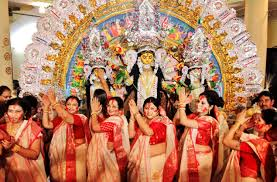

Welcome to West Bengal!

West Bengal, situated in eastern India, is a culturally rich and diverse state known for its literary heritage,
artistic traditions, festivals, and culinary delights. The state's capital, Kolkata (formerly Calcutta), is a
bustling metropolis renowned for its intellectual pursuits, colonial architecture, and vibrant cultural scene.
Cultural Hub: West Bengal's cultural identity is deeply rooted in its literature, arts, and intellectual
traditions. The state has produced renowned literary figures such as Rabindranath Tagore, India's first Nobel
laureate in Literature, and Bankim Chandra Chattopadhyay, who wrote the national song "Vande Mataram." Kolkata's
College Street is famous for its bookstores and academic institutions, embodying the city's love for literature
and education.
Festivals: West Bengal celebrates a plethora of festivals with zeal and enthusiasm. Durga Puja, the most
significant festival, showcases elaborate pandals (temporary structures) and artistic idols of Goddess Durga. The
festival is marked by cultural programs, traditional music (like Rabindra Sangeet), dance (like Durga Nritya), and
community feasts (bhog). Other festivals like Kali Puja, Diwali, Saraswati Puja, and Pohela Boishakh (Bengali New
Year) are also celebrated with fervor, reflecting the state's religious diversity and cultural vibrancy.
Art and Handicrafts: West Bengal is known for its rich artistic traditions and handicrafts. The state's
terracotta temples in Bishnupur, adorned with intricate carvings, are a testament to its architectural heritage.
Kolkata's Kalighat paintings, known for their vibrant colors and depictions of mythological themes, and the
intricate Jamdani sarees of Shantipur and Fulia are renowned for their craftsmanship. Other handicrafts include
Dokra metalwork, pottery, and clay dolls from Krishnanagar.
Cuisine: West Bengal's cuisine is celebrated for its variety and unique flavors, influenced by Bengali
traditions and coastal influences. Fish is a staple, with dishes like Machher Jhol (fish curry), Prawn Malai
Curry, and Bhapa Ilish (steamed hilsa fish) being favorites. Vegetarian dishes such as Shukto (mixed vegetable
curry), Aloo Posto (potato in poppy seed paste), and Cholar Dal (Bengal gram dal) are also popular. Sweets like
Rasgulla, Sandesh, and Mishti Doi (sweetened yogurt) are enjoyed year-round and are an integral part of Bengali
festivals and celebrations.
Performing Arts: West Bengal has a vibrant performing arts scene, with Rabindra Sangeet (songs composed by
Rabindranath Tagore) being a prominent cultural expression. The state is also known for its classical dance forms
such as Bharatanatyam, Kathak, and Odissi, alongside indigenous folk dances like Baul, Chhau, and Santhal dance.
The annual Dover Lane Music Conference in Kolkata is a prestigious event showcasing classical music performances
by renowned artists.
Modern Kolkata:
Kolkata, the cultural capital of India, blends colonial heritage with modern developments.
Landmarks like the Victoria Memorial, Howrah Bridge, and Marble Palace reflect the city's architectural grandeur.
Kolkata's vibrant street life, bustling markets (like New Market and College Street), and thriving arts scene
(with theaters, galleries, and film festivals) contribute to its cosmopolitan charm and cultural vitality.
In conclusion, West Bengal's rich cultural heritage, literary achievements, artistic traditions, festivals, and
culinary delights make it a captivating destination for travelers seeking a blend of history, art, spirituality,
and vibrant cultural experiences in eastern India. Whether exploring Kolkata's intellectual legacy, attending
Durga Puja festivities, savoring Bengali cuisine, or admiring traditional arts and crafts, West Bengal offers a
diverse tapestry of cultural richness and heritage.